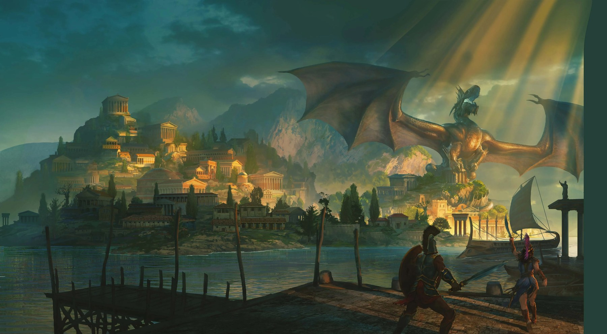

THYLEA
IN
PRIMARY
FORMS.
A campaign reduced to relationships, geometry and a few deliberate colors. The Dragonlords. The Titans. The Oath. The party.

THYLEA
A mythic continent shaped by gods, Titans and the legacy of the Dragonlords.
PARTY
- Rina / wpoluwiatr
- Xavier / archangelss
- Xastar / lecpowode
- Vespera / Maria
- Zander / Kuba
OATH
500 years of peace. One weakening promise.
500 → ?
DRAGONLORDS
Legend becomes pressure. History becomes present.
ODYSSEY
OF THE
DRAGONLORDS
OF THE
DRAGONLORDS